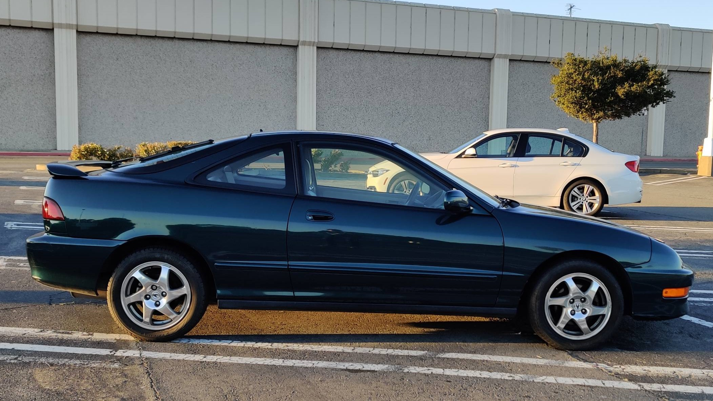

Mod List / Car Specs
- Skunk2 Shift Knob
98' Acura Integra GSR
This is the first car that I got after I got my license. I spent a lot of time searching on Facebook Market Place, Offer Up, and Craigslist for an Acura Integra GSR. I was very new to the car community at the period, so I was looking for something mainly stock to start with, because a stock car usually have less problem than a engine swapped or replaced car. One day I came across this car, a 1998 Acura Integra GSR was selling for $2000 with around 200,000 miles on the odometer.
I didn’t have a full driver license at the period, and I didn’t know how to drive a manual transmission car. So, I asked my friend who have a car to go check out the car with me. At 2019 October 10th, I got my first car! I was very excited, because owning my own car was always a dream for me. Although the car was aged and things are falling apart a little bit, but I still enjoy driving it.
However, the story of my first car ended in less than 2 months. I was going for a cruise with my friends for one day, and I need to help one of my friend to drive his car because he got pulled over and his driver license expired. So I asked friend of another friend to drive my car. At an intersection, my car was crashed by another vehicle going through a red lights, and the car was totaled. I was very sad at that point, but it is what it is.